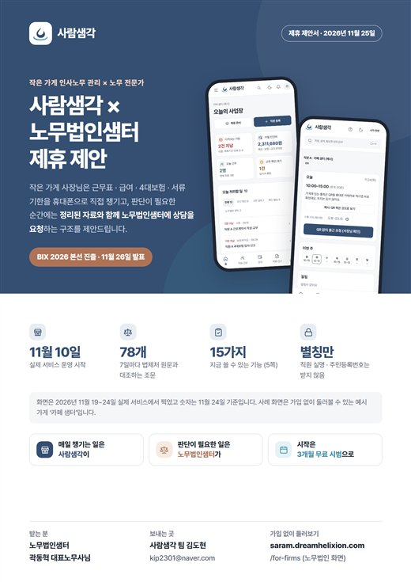

사람샘각
사람샘각
사람샘각 자료 모음
2026 부산 지산학 혁신대전(BIX) 최종 발표, 노무법인샘터 제휴 제안서, 광고 영상, 서비스 기능 정리를 한곳에 모았어요. 버튼을 누르면 파일을 바로 받을 수 있어요.
바뀐 내용
고친 파일에는 7일 동안 새로 바뀜 표시가 붙어요. 받아 두신 파일이 있으면 다시 받아 주세요.
2026 부산 지산학 혁신대전 BIX
BIX 최종 발표

노무법인샘터 (부산 수영구)
제휴 제안서

사람샘각과 노무법인샘터가 함께하는 시범 운영 제안이에요. 사장님의 매일 일은 사람샘각이 챙기고, 판단이 필요한 일은 정리된 자료와 함께 노무법인샘터로 이어지는 흐름을 실제 화면으로 설명해요.
| 쪽 | 내용 |
|---|---|
| 1–2 | 표지 · 제안 요약 (흐름 그림, 제안 세 가지, 첫 미팅에서 정할 것) |
| 3 | 왜 함께 하나 — 놓치기 쉬운 기한 4가지, 노무법인샘터가 얻는 것, 운영 중인 기능 12개 |
| 4–5 | 사장님의 하루 — 채용 공고 점검 → 근무표 · QR 출퇴근 → 4대보험 신고 → 급여 · 명세서 → 기한 알림 |
| 6 | 노무법인 화면 — 도착한 상담 요청, 4대보험 맡김 목록, 2단계 인증 |
| 7–8 | 운영 방식 · 비용 · 개인정보, 일정, 자주 묻는 질문, 시범 3개월 동안 함께 볼 것 |
유튜브 · 소개용
광고 영상
서비스 소개
사람샘각 기능 정리
한눈에 보기
사람샘각은 직원을 둔 작은 가게 사장님의 인사 · 노무를 대신 챙기는 웹 서비스예요. 매일 챙기는 일(근무, 급여, 4대보험, 서류, 기한)은 사람샘각이 맡고, 판단이 필요한 일은 정리된 자료와 함께 노무법인으로 보내요.
| 쓰는 사람 | 사장님 · 직원 · 노무법인 (세 화면) |
| 운영 | 2026년 11월 10일 실제 서비스 시작, 자체 도메인 |
| 주소 | saram.dreamhelixion.com |
| 둘러보기 | 가입 없이 예시 가게로 사장님 화면 · 직원 화면 |
| 쓰는 기기 | 컴퓨터 · 휴대폰 (휴대폰 화면 따로 다듬음) |
| 매칭 기업 | 노무법인샘터 (부산 수영구) — 시범 운영 제안 중 |
사장님 기능
메뉴 8개와 채용 화면으로 나뉘어요. 계산에 쓰는 금액 · 비율은 모두 그 날짜에 시행 중인 법령 기준으로 읽어요.
| 메뉴 | 할 수 있는 일 |
|---|---|
| 한눈에 보기 | 오늘 챙길 일(급한 순서), 이번 달 인건비 · 사업주 보험료, 기한이 있는 날 달력, 알림 |
| 직원 관리 | 실명 없이 별칭으로 직원 등록, 요일별 근로조건 · 시급, 초대 링크, 퇴사 처리 |
| 근무 관리 | 주간 · 월간 근무표, 주휴수당 · 휴게시간 자동 점검, 출퇴근 기록 · 승인 · 수정, 대타, 직원별 연차, 바쁜 날 표시 |
| 급여 관리 | 기본급 · 주휴수당 · 연장 · 야간 · 휴일 가산 계산, 4대보험 · 소득세 공제, 확정, 임금명세서, 임금대장 공식 서식 인쇄 |
| 보험 · 퇴직금 | 직원별 4대보험 가입 판정 · 보험료, 퇴직금 예상, 입사 · 퇴사 신고서에 채울 값과 공식 서식 인쇄, 신고 대리 요청서 |
| 서류 관리 | 직원마다 필요한 서류 체크리스트, 근로계약서 등 만들기, 직원에게 서류 요청 · 받음 처리, 서식 자료실 |
| 일정 · 기한 | 신고 · 계약 · 수습 종료 등 법정 기한 달력 · 목록, 카카오톡 알림, 구글 캘린더 연결 |
| 전문가 상담 | 상담 주제 → 물어볼 내용 → 보낼 항목 고르기 → 동의 후 노무법인에 보내기 |
| 채용 | 조건 · 인건비 → 공고문 법 점검(성별 · 나이 · 외모 조건) → 지원 접수 링크 · QR → 채용 확정(외국인 체류자격 점검, 확인해 볼 지원금) |
| 노무 점검 | 가입하면 바로 10가지 질문으로 위험을 미리 찾기 |
외국인 유학생을 쓰는 가게는 채용 때 체류자격 · 만료일 · 시간제취업 허가 시간을 점검하고, 근무표에서 허가 시간을 넘기면 경고하며, 영어 급여명세서를 줘요.
직원 기능
- QR 출퇴근 — 가게 QR을 한 번 찍으면 기록되고, 그대로 급여 계산으로 이어져요. 위치 · 주소는 받지 않아요.
- 내 근무 · 내 급여 — 근무 일정과 출퇴근 기록, 남은 연차, 확정된 임금명세서를 직접 봐요.
- 서류 내기 · 영어 화면 — 요청받은 서류를 확인하고, 유학생은 화면 전체를 영어로 바꿀 수 있어요.
노무법인 기능
- 상담 요청함 — 사장님이 동의하고 고른 항목만, 근로조건과 출퇴근 기록이 정리된 채로 도착해요. 판단과 답변은 노무사가 해요.
- 4대보험 신고 맡김 — 사장님이 맡긴 신고 건을 목록으로 봐요.
- 법령 기준 검수 — 계산에 쓰는 법령 규칙 · 자주 묻는 질문에 의견을 남겨요.
- 2단계 인증 — 노무법인 · 관리자 화면은 인증 앱으로 한 번 더 확인해요.
AI 노무 상담과 알림
- AI 노무 상담 — 화면 오른쪽 아래 단추로 어디서나 열고, 법령 조문을 근거로 답해요. 전문가 판단이 필요하면 전문가 상담으로 이어요.
- 카카오톡 알림 · 구글 캘린더 — 신고 · 계약 기한과 동네 행사 소식을 미리 알려 드려요(매일 오전 9시 확인).
- 법령 변경 감지 — 계산에 쓰는 조문 78개를 7일마다 법제처 원문과 대조하고, 공포된 시행 예정 개정 7건도 시행일부터 자동으로 반영해요.
로그인 없이 쓰는 무료 도구 (16쪽)
계산기 10개(주휴수당 · 4대보험료 · 퇴직금 · 연차 · 최저임금 월급 · 연장 · 야간 · 휴일수당 · 해고예고수당 · 실업급여 · 육아휴직 급여 · 출산휴가 급여), 양식 4개(임금명세서 · 근로계약서 · 영문 근로계약서 · 18세 미만 근로계약서), 근로계약서 체크리스트가 saram.dreamhelixion.com/tools에 있어요. 구글 · 네이버 검색에 등록했어요.
지역 상생
- 우리 동네 행사 — 공공 행사 데이터로 가게 지역의 행사를 보여 주고, 행사 3일 전 · 전날 카카오톡으로 알려 드려요.
- 급여명세서 속 동네 소식 — 명세서에 가장 가까운 동네 행사 하나와 QR이 들어가요. 주소 대신 시범 상권 기준이라 개인정보가 필요 없어요.
- 행사 날 인력 계획 — 바쁜 날 하루 단기 알바를 한 명 더 쓸 때 드는 돈 · 알바가 받는 돈 · 일하는 시간을 미리 계산하고, 그날 단기 알바 공고로 이어져요.
정확성 · 보안 · 개인정보
| 법령 규칙 | 52개, 법령 원문과 대조 — 조문 78개 모두 법제처 원문과 일치 (11월 20일) |
| 자동 테스트 | 화면 · 계산 498개 + 서버 174개, 통과해야 배포 |
| 받지 않는 것 | 직원 실명 · 주민등록번호, QR 출퇴근 위치 · 주소 |
| 데이터 | 가게마다 나눠 저장, 연락처 암호화, 채용 지원자 정보는 30일 뒤 삭제 |
| 노무법인에 가는 자료 | 사장님이 고르고 동의한 항목만 |